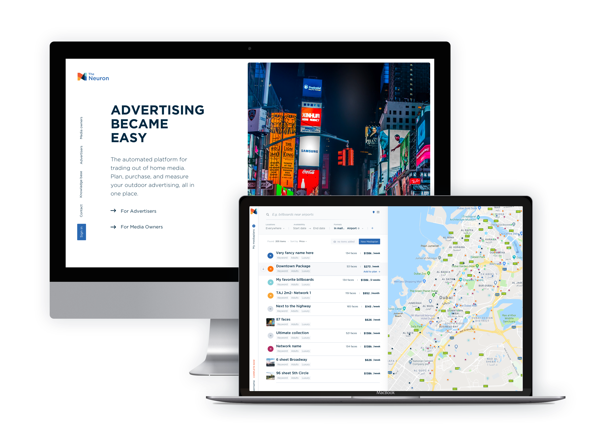

May 2018 (in progress)
Re-inventing the Out-Of-Home Advertising Industry is a very ambitious project by itself. Even in technologically advanced countries this area stays dark and unwilling to change, in the Middle East it is stuck in the Middle Ages. The Neuron is building the tool that on one hand will help Media Owners manage and sell their Advertising Locations more efficiently and on another hand will create a common marketplace for planning and buying campaigns.
Read the case study
December 2016
Product design process from the ground up - steps towards building a product with a strong backbone that can evolve over time. Which steps are important to make to build a proper foundation that follows your company's mission, how to zoom out to the Big Picture, how to organize user flows and environments into a logical system - I am trying to touch many critical questions that few designers think about.
Read the case study